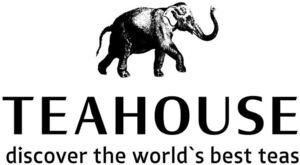

Trade Mark Journal No.2025/029 18 July 2025
WO0000001796361 (30,35,43)
Office of origin: Ukraine
Date of International Registration:1 May 2024
Date of designation in the UK:
1 May 2024

International priority date claimed: 26 April 2024
(Ukraine)
- Class 30
- Flavorings, other than essential oils, for beverages; coffee flavorings; cereal bars; flour-based dumplings; confectionery; confectionery in the form of mousses; coffee substitutes; cocoa substitutes; tea substitutes; unroasted coffee beans; roasted coffee beans; coffee; coffee capsules, filled; coffee beverages with milk; cocoa; cocoa beverages with milk; caramels [candies]; caramels [sweets]; flowers or leaves for use as tea substitutes; kombucha; cinnamon [spice]; macarons; honey; ice cream; chocolate mousses; coffee-based beverages; cocoa-based beverages; chamomile-based beverages; tea-based beverages; chocolate-based beverages; tea beverages with milk; aniseed; star aniseed; infusions, not medicinal; pralines; natural sweeteners; profiteroles; gingerbread; puddings; vegetal preparations for use as coffee substitutes; sweets; cakes; pastries; chicory [coffee substitute]; crystallized rock sugar; sugar; herbal teas; kelp tea; iced tea; tea; chocolate; chocolate beverages with milk.
- Class 35
- Administrative processing of purchase orders; administrative services for the relocation of businesses; administration of consumer loyalty programs; cost price analysis; business auditing; financial auditing; auctioneering; outsourced administrative management for companies; negotiation of business contracts for others; market studies; opinion polling; invoicing; arranging and conducting of commercial events; payroll preparation; tax preparation; demonstration of goods; business inquiries; administrative assistance in responding to calls for tenders; administrative assistance in responding to requests for proposals [RFPs]; business management assistance; commercial or industrial management assistance; business research; economic forecasting; providing user reviews for commercial or advertising purposes; providing business information via a website; providing business information; providing commercial and business contact information; providing commercial information and advice for consumers in the choice of products and services; providing user ratings for commercial or advertising purposes; compilation of information into computer databases; compilation of statistics; web indexing for commercial or advertising purposes; business management for freelance service providers; business management of reimbursement programs for others; interim business management; commercial administration of the licensing of the goods and services of others; computerized file management; personnel management consultancy; business management consultancy; consultancy regarding advertising communication strategies; consultancy regarding public relations communication strategies; business organization consultancy; marketing; influencer marketing; marketing in the framework of software publishing; targeted marketing; marketing through product placement for others in virtual environments; marketing research; provision of an online marketplace for buyers and sellers of goods and services; provision of an online marketplace for buyers and sellers of downloadable digital image files authenticated by non-fungible tokens [NFTs]; writing of publicity texts; scriptwriting for advertising purposes; book-keeping; accounting; word processing; updating of advertising material; updating and maintenance of data in computer databases; updating and maintenance of information in registries; search engine optimisation for sales promotion; organization of exhibitions for commercial or advertising purposes; organization of fashion shows for promotional purposes; organization of trade fairs; rental of advertising space; shop window dressing; business appraisals; personnel recruitment; business management and organization consultancy; business intermediary services relating to the matching of potential private investors with entrepreneurs needing funding; commercial information agency services; employment agency services; advisory services for business management; business efficiency expert services; outsourcing services [business assistance]; business project management services for construction projects; competitive intelligence services; business consultancy services for digital transformation; corporate communications services; layout services for advertising purposes; appointment reminder services [office functions]; data processing services [office functions]; online ordering services in the field of restaurant take-out and delivery; news clipping services; website traffic optimisation; price comparison services; sales prospecting for others; preparation of business profitability studies; market intelligence services; procurement services for others [purchasing goods and services for other businesses]; media relations services; appointment scheduling services [office functions]; gift registry services; tax filing services; import-export agency services; lead generation services; modelling for advertising or sales promotion; business intermediary services relating to the matching of various professionals with clients; advertising agency services; advertising services to create brand identity for others; business partnership search; public relations; commercial lobbying services; commercial intermediation services; wholesale and/or retail services connected with the sale of coffee, tea, cocoa and their substitutes, confectionery, chocolate, jams, compotes, ice cream, sorbets and other edible ices, sugar, sugar substitutes, honey, non-alcoholic beverages, freeze-dried fruits and berries, tableware and table cutlery, filter bags for teapots and/or cups, gift boxes; retail services connected with the sale of downloadable digital image files authenticated by non-fungible tokens [NFTs]; retail services connected with the sale of bakery products; data search in computer files for others; sponsorship search; presentation of goods on communication media, for retail purposes; rental of billboards [advertising boards]; rental of cash registers; office machines and equipment rental; rental of office equipment in co-working facilities; publicity material rental; rental of advertising time on communication media; rental of vending machines; rental of sales stands; psychological testing for the selection of personnel; publication of publicity texts; radio advertising; registration of written communications and data; advertising; pay per click advertising; outdoor advertising; advertising by mail order; direct mail advertising; online advertising on a computer network; typing; bill-posting; distribution of samples; dissemination of advertising matter; development of marketing concepts; development of advertising concepts; development of business organization strategies relating to corporate social responsibility; business investigations; systemization of information into computer databases; drawing up of statements of accounts; compiling indexes of information for commercial or advertising purposes; consumer profiling for commercial or marketing purposes; sales promotion for others; promotion of goods and services through sponsorship of sports events; promotion of goods through influencers; production of advertising films; production of teleshopping programs; transcription of communications [office functions]; television advertising; telemarketing services; negotiation and conclusion of commercial transactions for third parties; professional business consultancy.
- Class 43
- Food and drink catering; information and advice in relation to the preparation of beverages and/or meals; bar services; café services; cafeteria services; restaurant services; self-service restaurant services; take-away restaurant services; food reviewing services [provision of information about food and drinks]; snack-bar services; rental of cooking apparatus; rental of transportable buildings; rental of robots for preparing beverages; rental of chairs, tables, table linen, glassware; creating compositions from food and/or beverages.
Kostiantyn Mazuryk
Representative: Daria Tymchenko, PO Box 434, Dnipro 49005, UKRAINE